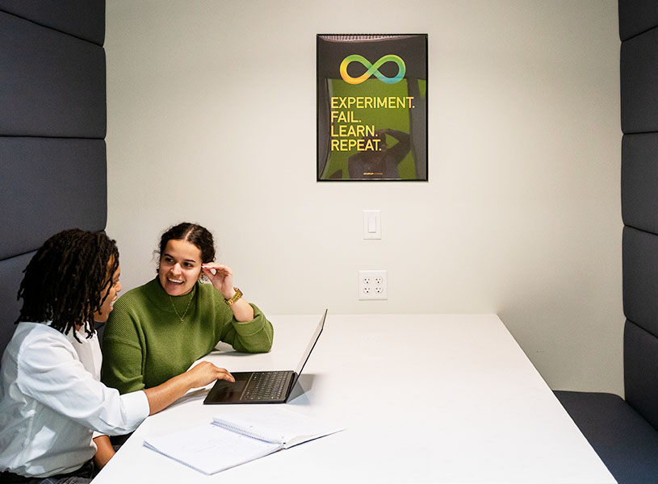
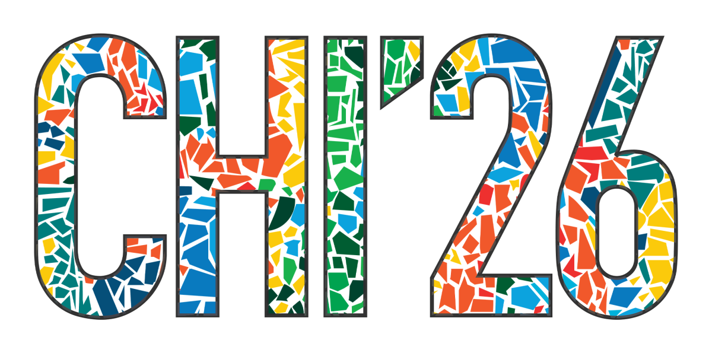

Preparing LIS students to lead information institutions
The University of Maryland College of Information (INFO) is a top-ranked research and teaching college where faculty, staff, and students are passionate about using information and technology to break down barriers and create exciting new possibilities.

Expanding the frontiers of how information and technology is accessed, used, and leveraged to empower individuals and communities.

Bachelor, Master, PhD, and Certificate programs preparing the next generation of information professionals and researchers.
Working with community, academic, and industry partners to create information science solutions and career opportunities for students.

Supporting new generations of students through scholarships, internships, and connections while enjoying networking and other benefits.
Research
A new generation of AI tools is changing how analysts and aid workers make sense of war in real time.

Research
UMD's HCIL contributes 19 papers to CHI 2026, advancing human-computer interaction research worldwide.
Research
Dr. Eun Kyoung Choe is using AI to turn dense OTC drug labels into personalized guidance.
College News
Dr. John Bertot has been appointed as the next dean of UMD's College of Information, beginning July 1, 2026.
College of Information (INFO)
4130 Campus Drive Hornbake Library, Rm. 0201 College Park, MD 20742-4345